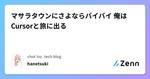
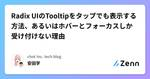

chot Inc. tech blogのフィード
https://zenn.dev/p/chot
ちょっと株式会社（https://chot-inc.com）のエンジニアブログです。 フロントエンドエンジニア募集中！ カジュアル面接申し込みはこちらから https://chot-inc.com/recruit/iuj62owig
フィード
connpassの勉強会情報をDiscordへ通知する 2
2
chot Inc. tech blogのフィード
はじめにみなさんは勉強会やイベントはお好きですか？興味のある分野のLTや他社エンジニアの実体験をきくとモチベーションが上がりますし、エンジニア同士のつながりができるのも魅力だと思います👩🏼💻興味のある勉強会やイベントの情報を効率よく取得できるようDiscordを使って情報を得るシステムを構築しました。 つくったものDiscordにこのような感じでイベントが通知されます。本当はイベント画像もあるとよりイベントに興味も持ちやすく良かったのですがAPIからは取得できませんでした😮💨画像については引き続き取得方法を検討してみたいと思います。 使用する技術スタック...
4日前

マサラタウンにさよならバイバイ 俺はCursorと旅に出る 21
chot Inc. tech blogのフィード
こんにちわ！hanetsukiです。この記事はCursorが出た頃に一瞬使ってみて「う〜〜〜ん、なんかビミョい」となり、VSCodeに出戻ったフロントエンドエンジニアがもう一回Cursorを使い始めて長期的に使っていきそうな所感を感じたまとめ記事です。 Q.Cursorってなに？A.端的に申し上げますと、VSCodeにAI搭載したエディターです。https://www.cursor.com/VSCodeをフォークして開発されているので、見た目もまんまVSCodeです。 Q.なんでVSCodeに戻ったの？A.UIの微妙な差が気に食わなかったのです。過去のことなのでよくわ...
11日前

Radix UIのTooltipをタップでも表示する方法、あるいはホバーとフォーカスしか受け付けない理由 1
chot Inc. tech blogのフィード
Radix UIのTooltipで実装していたときに、モバイルでタップしてもポップアップが表示されず困ってしまったことがありました。なぜなら、デスクトップではホバー、モバイルではタップで表示されることが要件だったからです。この記事ではタップ操作でも表示できるようにした方法と、なぜタップ操作で表示できなくなっているかを紹介します。 Tooltipはアクションボタンに対するチップ（補足情報）を提示するUIIssueを探っているとRadix UIのUI Software Engineerであるbenoitgrelardさんがコメントしていました（Raycastの中の人でもある！）。...
13日前

Drupalを「知らない」から「ナニモワカラナイ」までの感想
chot Inc. tech blogのフィード
はじめにこんにちは！フロントエンドエンジニアのかこなーるです！私は最近、Drupalを用いた複数サイトの管理を行うプロジェクトに参画する機会がありました。今日は、その際に感じたDrupalの特徴や、学んだことについて共有したいと思います。 DrupalとはどういったCMSなのかDrupalは、高機能で柔軟性がありスケーラブルなCMSとして、多くの大規模なウェブサイトやアプリケーションで採用されています。高いカスタマイズ性とセキュリティ、豊富なモジュールとテーマによって様々なニーズに応じたウェブサイトを構築することができるということを特徴としたCMSです。Drupal シ...
18日前
React Hooksもりもり構成のチャット機能を考える[React 19 / Next.js 15]
chot Inc. tech blogのフィード
はじめに 🚩この記事では、Tanstack Query や SWR などのライブラリに頼らずに、React 標準の Hooks をふんだんに活用してチャット機能を実装する方法を紹介します。RC（Release Candidate）段階ではありますが、React 19 で追加された useActionState と useOptimistic を使うことで、よりインタラクティブで快適な UI/UX を実現する方法を探っていきます。また筆者の過去の記事ではそれぞれの Hooks に焦点を当てた記事を書いているので、そちらもあわせて参照してください。https://zenn.dev...
1ヶ月前
Hugo の記事をヘッドレスCMS で管理できる！ Content adapters 入門
chot Inc. tech blogのフィード
概要静的サイトジェネレーターである Hugo では、v0.126.0 にして遂にビルド時に動的に記事を生成する機能がリリースされました。それが Content adapters です。https://gohugo.io/content-management/content-adapters/今回は Content adapters を使い、microCMS で作成した記事データを用いたブログを作ってみます。環境hugo v0.126.2完成品https://github.com/k1350/hugo-microcms-sample説明することCon...
1ヶ月前
ユーザー操作のイベントかそうでないかを判定できるevent. isTrustedプロパティで意図しない動作を防ぐ
chot Inc. tech blogのフィード
イベントの伝播を防ぐのはstopPropagation()ですが、伝播するはずのない要素でイベントが走ってしまい動作不良が起きてしまうことがありました。そのときに問題の解消方法として採用したisTrustedプロパティを紹介します。 ユーザー操作かスクリプトで作成・変更されたかを返してくれるevent.isTrustedMDNには次のような説明があります。isTrusted は Event インターフェイスの読み取り専用プロパティで、このイベントがユーザー操作によって生成された場合は true、このイベントがスクリプトで作成または変更されたり、 EventTarget.di...
1ヶ月前
Cloud Functions（第 2 世代）による Cloud Firestore の拡張のテストコードを書く
chot Inc. tech blogのフィード
この記事についてCloud Functions（第２世代）による Firestore の拡張のテストコードの書き方は Cloud Functions（第１世代）とほとんど同じなので、基本的には Unit testing of Cloud Functions を読んで実装していけば良く、Zenn にも参考となる記事が複数あります。しかし第１世代との違いが一点あり、その一点に関する情報をうまく探せず時間を費やしたため第２世代の書き方として記事にしました。テストコードを書く前提となる部分（テスト対象となる関数の書き方、Firebase CLI のインストール、エミュレータの導入等）は...
2ヶ月前
【Capacitor入門】Webエンジニアでもモバイルアプリを作りたい！
chot Inc. tech blogのフィード
Webエンジニアのわでぃんです。個人開発で、Capacitor（キャパシター）を使ってアプリを作り完全に理解した（？）ので紹介します。Capacitorの記事はちらほら見かけますが、入門系の記事がなかったためまとめています。この記事を見ることで、Capacitorでできることを知り、最低限の機能のアプリを作ることができます。実際にReactプロジェクトをモバイルアプリ化し、シミュレータで起動するまでを行います。＊今回は、App Store ConnectやGoogle Play Console、リリース周りは触れません🙅♂️ Capacitorとは？ひとことで言うと、W...
2ヶ月前
今ホットなHonoを使ってNext.jsのRoute Handlersをハイジャックする
chot Inc. tech blogのフィード
はじめに 🚩この記事では、Next.js の Route Handlers の代わりに Hono を使って、API ルートを置き換える方法について説明します。Hono の RPC 機能を使って、Next.js の API ルートを置き換えることで、API のエンドポイントの URL や戻り値の型を自動で取得し、堅牢的なコードを書くことができます。 実装例 📝簡単な記事投稿デモを作成し、Hono を使って API ルートを置き換える方法を説明します。 前準備Next.js プロジェクトを作成し、先日 GA された Neon Database を使ってデータベースを作成し...
2ヶ月前
公式Slack Appを作成せずにSlackツールをChrome拡張で作成する技術
chot Inc. tech blogのフィード
この記事について!ここで出てくるSlackのトークンは公式で明示されていないトークン使用例のためおすすめできる方法ではありません。トークンは個人ユーザに対してのものになりますので問題などは個人責任でよろしくお願いします。この記事を閲覧するモチベーションとして下記を意識し、アイデアを広げるためのものと認識して閲覧してください。裏技的に個人ツールが作成できるChrome拡張でできることの幅を広げる 作例したサンプルコードhttps://github.com/igara/slack_message_chrome_extension内容としては所属しているSlack...
2ヶ月前
Astro DB を使ったアプリケーションを Vercel にデプロイする
chot Inc. tech blogのフィード
まえがきこの記事は、Astro DB / Astro Studio を使ってページごとに押された「いいね」を管理する Web サイトを Vercel にデプロイするまでの流れを簡単に紹介する記事です。 バージョン情報"@astrojs/check": "^0.5.10","@astrojs/db": "^0.10.4","@astrojs/preact": "^3.2.0","@astrojs/vercel": "^7.5.3","astro": "^4.6.1","preact": "^10.20.2","typescript": "^5.4.5"Node.j...
3ヶ月前
Next.jsのPreview Modeを使ってmicroCMSのプレビュー機能を実装してみた
chot Inc. tech blogのフィード
技術構成API: microCMS(ヘッドレスCMS)Next.jsVercelTypeScript はじめにプレビュー機能は、Next.jsのPreview Modeのおかげで、実装自体は簡単になりました。ですが、「現在どのプロセスを実行中で、どのシステムやサービスに対してどんな操作を行っているのか？」 の把握に少し時間がかかりました。なのでこの記事では、プレビュー機能を実装する過程を分けて解説し、図解した上で今はどの過程かを示して書くようにしました。特に初めての方が迷わずに進められるように心がけました。 プレビュー機能とは？プレビュー機能は、コンテンツの...
5ヶ月前
【Next.js】Google Analytics も YouTube iframe 埋め込みも公式ライブラリでいけるようになるぞ
chot Inc. tech blogのフィード
ちょっと株式会社 Advent Calendar 2023 12 月 24 日の記事です。https://adventar.org/calendars/8910みなさんこんにちは、chot Inc. の Web エンジニアです。Next.js で Google Analytics を導入するとき、どうしていますか？僕は毎度「nextjs google analytics」でググって「こうやるのか〜」と適当に作っています。本当にちゃんと計測されているのか疑心暗鬼です。また、YouTube の iframe 埋め込みはどうでしょう。普通に iframe を埋め込むと PageSpe...
6ヶ月前
Next.jsをEKSに載せたい[~deployment編]
chot Inc. tech blogのフィード
ちょっと株式会社 アドベントカレンダー2023 12月23日の記事です。https://adventar.org/calendars/8910 環境のセットアップAWS上でのIAMの作成Dockerのセットアップ便利ツールのインストールここでは1~3に関しての詳細は割愛します。今回は簡易的なものであるため、IAMロールにはAdministratorAccessをアタッチしました。また、VSCode上でAWS CLIを使えるようにもしておきましょう。https://docs.aws.amazon.com/ja_jp/cli/latest/userguide/c...
6ヶ月前
息子と遊ぶために簡単なボイスレコーダーアプリを作った
chot Inc. tech blogのフィード
ちょっと株式会社 アドベントカレンダー2023 12月22日の記事です。https://adventar.org/calendars/8910 はじめにどうも、デジタルネイティブ世代の息子（4歳）を持つエンジニアです。子供の成長は日々早く、いつの間にかタブレットの使い方を覚えて、器用にスワイプしたり、YouTubeを見たりしています。アプリで遊ぶ息子の姿を見て、「パパが作ったアプリで遊ばせてみたい」という気持ちから、音声入力・自動出力アプリを作りました。 作ったアプリ■mic.https://mic-web-speech-recorder.vercel.app/...
6ヶ月前
Raspberry Pi Picoでつくる電光掲示板
chot Inc. tech blogのフィード
https://adventar.org/calendars/8910ちょっと株式会社アドベントカレンダー 12月18日の記事です。この記事ではRaspberry Pi Pico(以下ラズパイピコと呼ぶ)を使ってLEDマトリクスパネルを制御します。 ラズパイピコの購入ラズパイピコはC/C++やMicroPythonでプログラミングできるマイコンボードです。AliExpressというECサイトで購入しました。日本語表記が怪しいですが、問題なく届きました。 ラズパイピコとPCの接続PCとラズパイピコをUSBケーブルで接続します。thonnyというIDEを使ってプログ...
6ヶ月前
Next.jsでのブログページの多言語機械翻訳を考える
chot Inc. tech blogのフィード
https://adventar.org/calendars/8910ちょっと株式会社 Advent Calendar 2023年 12月 16日の記事です。 はじめにこんにちは、ちょっと株式会社のフロントエンドエンジニア、かこなーるです。今回は先日検討する機会のあった、機械翻訳を含む多言語化対応についての記事を書きます。近年i18n対応を行うプロダクトも多いかと思いますが、その中でもNext.jsでブログのようなコンテンツに機械翻訳を利用した構成の記事はあまり見かけませんでしたので、今回はそれについて書きたいと思います。 なぜ機械翻訳なのか通常、Next.jsで多言...
7ヶ月前
X(旧:Twitter)の動的シェアテキストを文字数上限ぴったりに収める
chot Inc. tech blogのフィード
はじめにX(旧:Twitter)のシェアリンクは、https://twitter.com/intent/tweet?text=***の***部分に投稿本文を設定できます。しかし、コンテンツのタイトルなど可変長の文字列を含める場合、文字数上限をオーバーすることがあります。ユーザーに手間を取らせないよう、溢れる分は「…」などの省略文字で適切に置き換えたいところですが、Xの文字数カウントは独自仕様なため、lengthプロパティでは正確にカウントできません。この記事では、オーバー分を省略文字に置き換えつつ、文字数上限ぴったりに収めて気持ちよくなる実装例を紹介します。 twitt...
7ヶ月前
Node.js アプリケーションを OpenTelemetry で計装してみる
chot Inc. tech blogのフィード
https://adventar.org/calendars/8910 はじめにこの記事では Node.js アプリケーションを OpenTelemetry を使って計装し、 API リクエストのトレーシングを試してみます。アプリケーションは大きく三つのレイヤーに分かれている API サービスです。RouterUsecaseDB Accessリクエストからレスポンスまでの間、それぞれのレイヤーでどれだけ処理時間がかかっているのか確認できる状態を目指していきます。 OpenTelemetry とはOpenTelemetry（以下 OTel ）はメトリクスやログ、...
7ヶ月前